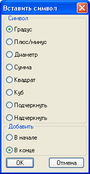

Команда:edit_add_special_symbol_to_text
Команда:edit_add_special_symbol_to_textДобавляет выбранный символ до или после текста.
Вызов программы:
Команда:edit_add_special_symbol_to_text
 Выбери текст:
Выбери текст:
 Указывает объект типа текст
Указывает объект типа текст

В появившемся окне выбирает какой символ надо вставлять и с какого конца строки.